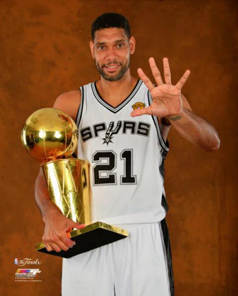

Tim Duncan

Tim Duncan played from 1997 to 2016. In that time period, he amassed Career Achievements:
Career Achievements:
- NBA Championships: 5 (1999, 2003, 2005, 2007, 2014)
- NBA Most Valuable Player (MVP) Awards: 2 (2002, 2003)
- NBA All-Star Appearances: 15 (1998–2004, 2006–2013, 2015)
- NBA All-Star Game MVP: 0
- NBA All-Defensive First Team: 8 times (1999, 2001–2003, 2005, 2007–2009)
- NBA All-Defensive Second Team: 7 times (2000, 2004, 2006, 2010–2013)
- NBA Finals MVP: 3 (1999, 2003, 2005)
All-Time Rankings:
- Points: 26,496 – 19.0 PPG
- Rebounds: 15,091 – 10.8 RPG
- Assists: 4,225 – 3.0 APG
- Blocks: 3,020 – 2.2 BPG
- Field Goals Made: 10,285
- Field Goal Percentage: 50.6%
- Minutes Played: 47,368
- Free Throw Percentage: 69.6%
Single-Game Records:
- Most Points in a Game: 53 (career high)
- Most Rebounds in a Game: 23 (career high)
- Most Blocks in a Game: 8 (career high)
Notable Career Feats:
- Led Spurs to 5 NBA Championships
- Only player to be named NBA MVP and Finals MVP in the same year twice
- Longest-serving franchise player for the Spurs
Hall of Fame Induction:
- 2020: Tim Duncan was inducted into the Naismith Memorial Basketball Hall of Fame